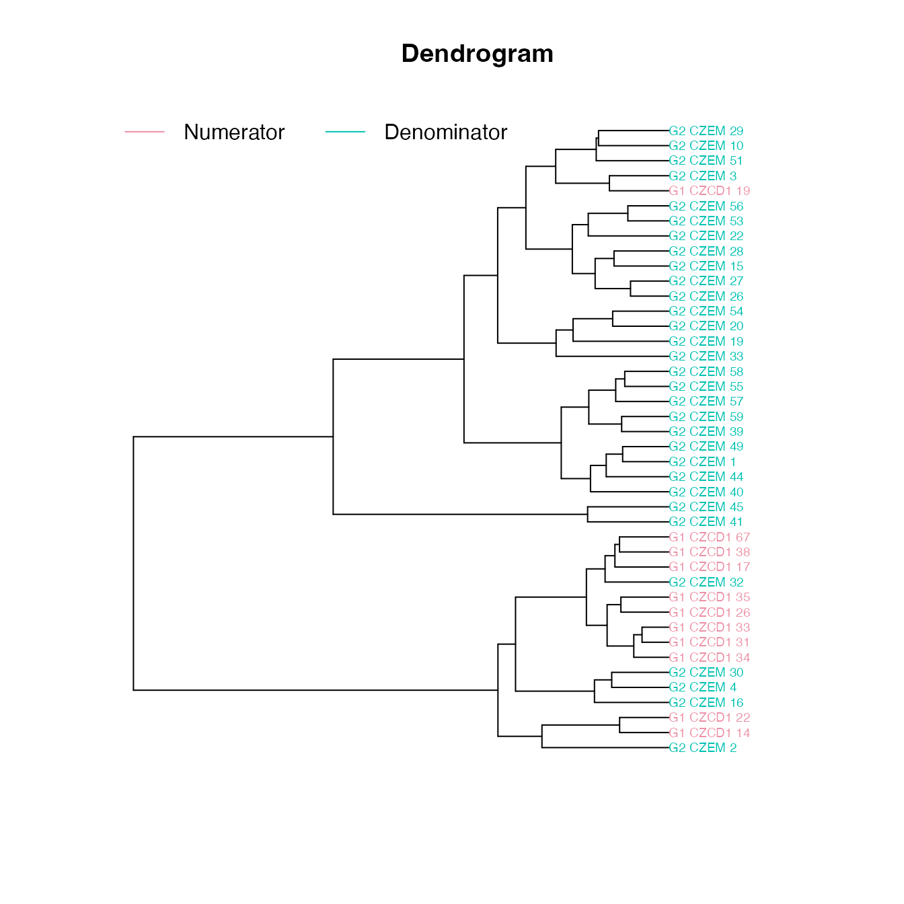

EDMA growth matrix
Peter Solymos
edma04-growth.RmdIntroduction
This tutorial explains how to calculate growth matrix based on 4 EDMA data objects with homologous landmarks.
We will use data sets where landmarks were measured on specimens of 2 different ages (E17.5 embryonic and newborn mice), taking a subset (l) of 10 landmarks:
library(EDMAinR)
#> EDMAinR 0.2-0 2021-11-04
file_a1 <- system.file("extdata/growth/CZEM_wt_global.xyz",
package="EDMAinR")
file_a2 <- system.file("extdata/growth/CZP0_wt_global.xyz",
package="EDMAinR")
l <- c("amsph", "bas", "loci", "lpto", "lsqu",
"lsyn", "roci", "rpto", "rsqu", "rsyn")
a1 <- read_xyz(file_a1)[l,,]
a2 <- read_xyz(file_a2)[l,,]
a1
#> EDMA data: Crouzon unaffected embryonic mouse
#> 10 landmarks, 3 dimensions, 31 specimens
a2
#> EDMA data: Crouzon unaffected newborn mouse
#> 10 landmarks, 3 dimensions, 11 specimensEstimating the growth matrices
We first estimate the mean forms (no bootstrap replicates are necessary).
Growth matrices (\(GM\)) are formed as pairwise Euclidean distances between landmarks from EDMA fit objects using the estimated mean forms from objects a1 and a2.
The growth matrix is calculated as the ratio of form matrices (\(FM\)) from the numerator and denominator objects: \(FDM(a1,a2) = FM(a2)/FM(a1)\). a2 is taken as the numerator, a1 as the denominator. We put the older sample (newborn) in the numerator spot and the younger sample (embryonic) in the denominator spot
gm <- edma_gm(a1=fit_a1, a2=fit_a2, B=25)
gm
#> EDMA growth matrix
#> Call: edma_gm(a1 = fit_a1, a2 = fit_a2, B = 25)
#> 25 bootstrap runs (ref: denominator)
#> Tobs = 1.259, p < 2.22e-16Global T-test
The global testing is explained on the form difference page:
global_test(gm)
#>
#> Bootstrap based EDMA T-test
#>
#> data: growth matrix
#> Tobs-value = 1.259, B = 25, p-value < 2.2e-16
plot_Ttest(gm)
Local testing
The local testing is explained on the form difference page:
head(confint(gm))
#> 2.5% 97.5%
#> bas-amsph 1.097126 1.139303
#> loci-amsph 1.090709 1.140518
#> lpto-amsph 1.124263 1.157854
#> lsqu-amsph 1.125901 1.180991
#> lsyn-amsph 1.111795 1.183497
#> roci-amsph 1.088908 1.140621
head(get_gm(gm))
#> row col dist lower upper
#> 1 bas amsph 1.116726 1.097126 1.139303
#> 2 loci amsph 1.112833 1.090709 1.140518
#> 3 lpto amsph 1.144189 1.124263 1.157854
#> 4 lsqu amsph 1.149705 1.125901 1.180991
#> 5 lsyn amsph 1.139680 1.111795 1.183497
#> 6 roci amsph 1.110515 1.088908 1.140621
head(get_gm(gm, sort=TRUE, decreasing=TRUE))
#> row col dist lower upper
#> 45 rsyn rsqu 1.196344 1.170451 1.221840
#> 31 lsyn lsqu 1.194661 1.171932 1.222121
#> 41 rsqu roci 1.159037 1.138248 1.190256
#> 35 rsyn lsqu 1.155865 1.132506 1.183046
#> 19 lsqu loci 1.155629 1.133975 1.179900
#> 16 rsqu bas 1.155440 1.135015 1.177115
head(get_gm(gm, sort=TRUE, decreasing=FALSE))
#> row col dist lower upper
#> 28 rpto lpto 0.9502249 0.9187017 1.017281
#> 34 rsqu lsqu 1.0364970 1.0186496 1.062037
#> 21 roci loci 1.0365211 1.0021116 1.055886
#> 27 roci lpto 1.0423805 1.0296007 1.062666
#> 22 rpto loci 1.0515532 1.0381430 1.070109
#> 29 rsqu lpto 1.0610708 1.0388944 1.082089The plot_ci function shows the pairwise differences and confidence intervals:
plot_ci(gm)
Influential landmarks
Influence is calculated similarly to \(FDM\):
get_influence(gm)
#> landmark Tdrop lower upper
#> 1 amsph 1.259012 1.012273 1.147487
#> 2 bas 1.259012 1.015448 1.147487
#> 3 loci 1.259012 1.015448 1.147487
#> 4 lpto 1.154219 1.012714 1.090116
#> 5 lsqu 1.259012 1.011701 1.147487
#> 6 lsyn 1.259012 1.015448 1.146744
#> 7 roci 1.259012 1.014498 1.147487
#> 8 rpto 1.154219 1.010438 1.079035
#> 9 rsqu 1.257240 1.013524 1.146822
#> 10 rsyn 1.257240 1.012347 1.146079
plot(get_influence(gm))
Ordination and clustering for specimens
plot_ord(gm)The dendrogram leaves (specimen labels) are also colored by groups:
plot_clust(gm)
Visualizing landmarks
The 2D and 3D plots produce a plot of the mean form from the reference object (‘prototype’). The color intensity for the landmarks (dots) is associated with the Tdrop influence value (larger the difference, the more intensive the color; red by default). Lines between the landmarks represent distances. We use the diverging palettes: <1 differences are colored blue (1st half of the palette), >1 differences are colored red (2st half of the palette).
plot_2d(gm, cex=2)
Growth difference matrix
Growth difference matrix (\(GDM\)) is calculated as \(GDM(A1,A2,B1,B2) = GM(B1,B2) / GM(A1,A2)\).
We will use two Crouzon mutant samples, same age groups as for the unaffected samples (embryonic and newborn):
file_b1 <- system.file("extdata/growth/CZEM_mut_global.xyz",
package="EDMAinR")
file_b2 <- system.file("extdata/growth/CZP0_mut_global.xyz",
package="EDMAinR")
b1 <- read_xyz(file_b1)[l,,]
b2 <- read_xyz(file_b2)[l,,]
b1
#> EDMA data: Crouzon mutant embryonic mouse
#> 10 landmarks, 3 dimensions, 18 specimens
b2
#> EDMA data: Crouzon mutant newborn mouse
#> 10 landmarks, 3 dimensions, 11 specimens
fit_b1 <- edma_fit(b1, B=25)
fit_b2 <- edma_fit(b2, B=25)Growth matrices (\(GM\)) are formed as pairwise Euclidean distances between landmarks from EDMA fit objects using the estimated mean forms from objects a1 and a2.
The growth matrix is calculated as the ratio of form matrices (\(FM\)) from the numerator and denominator objects: \(FDM(a1,a2) = FM(a2)/FM(a1)\). a2 is taken as the numerator, a1 as the denominator. We put the older sample (newborn) in the numerator spot and the younger sample (embryonic) in the denominator spot
gdm <- edma_gdm(a1=fit_a1, a2=fit_a2, b1=fit_b1, b2=fit_b2, B=25)
gdm
#> EDMA growth difference matrix
#> Call: edma_gdm(a1 = fit_a1, a2 = fit_a2, b1 = fit_b1, b2 = fit_b2,
#> B = 25)
#> 25 bootstrap runs (ref: denominator)
#> Tobs = 1.1113, p = 0.15385
global_test(gdm)
#>
#> Bootstrap based EDMA T-test
#>
#> data: growth difference matrix
#> Tobs-value = 1.1113, B = 26, p-value = 0.1538
plot_Ttest(gdm)
plot_ci(gdm)
plot_ord(gdm)
plot_clust(gdm)
plot_2d(gdm)
xyz <- plot_3d(gdm)
text3d(xyz, texts=rownames(xyz), pos=1) # this adds names
decorate3d() # this adds the axes
rglwidget(width = 600, height = 600, reuse = FALSE)